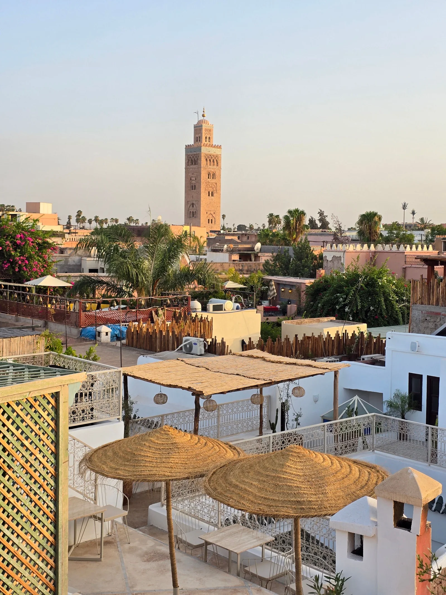

Choose a starting route
Check the destinations, travel time and suggested overnight stops. Save or compare a few trips, or ask for help choosing.

SCROLL TO DISCOVER ↓✳ MOROCCO TOURS, DAY TRIPS & EXPERIENCES
Explore the Sahara, discover the cities or escape to the coast. Find a route that fits your time, then request an itinerary and quote for your dates.
Find my tripCHOOSE YOUR MOROCCO EXPERIENCE
A few hours, a day away or a longer adventure. Compare where each trip goes, the time it takes and who it suits before choosing your next step.
No journeys match these choices. Try another place or experience.
Found a route you like? Open the itinerary, check the pace and request a quote for your dates.
 AGAFAY · THE QUIETER HOURS
AGAFAY · THE QUIETER HOURSCHOOSE THE RIGHT DESERT EXPERIENCE
One evening near Marrakech or several days among the dunes? Start with the time you have and the landscape you want to see.
START WITH A DESTINATION
Explore trips by destination, then check where each one starts and how much time to allow.
HOW TO PLAN YOUR TRIP
You do not need every detail worked out. Start with your dates, your interests and the pace you enjoy.
Check the destinations, travel time and suggested overnight stops. Save or compare a few trips, or ask for help choosing.
Share your dates, group size, preferred stays and budget. Add the places you want to see and anything that would make the journey more comfortable.
Before confirming, agree on the route, accommodation, total price, inclusions and cancellation terms. Your initial request carries no booking commitment.
BEFORE YOU PACK
GOOD QUESTIONS
Your request records your dates and preferences and gives you a reference to keep. It does not reserve a trip. Before booking, agree on the itinerary, accommodation, transport, total price and cancellation terms. No payment is taken here.
You can tell us which you prefer in your request. The available arrangements and price must be confirmed for your dates. A private vehicle is for your party; a shared trip has other travelers and a less flexible schedule.
Use the trip details as a checklist for your quote. Ask for accommodation, transport, meals, guides and activities to be itemized, with optional extras shown separately. Final inclusions depend on the arrangements agreed for your dates.
Yes—include your ideas in the request. The routes here are starting points. An extra night in the desert or a slower pace often changes the experience more than adding another stop.
Merzouga is too far for a practical return day trip from Marrakech. Choose a multi-day itinerary for the sand dunes. Agafay is much closer and works for an evening, but it is a rocky landscape, not the Sahara dune fields.
READY TO TAKE THE NEXT STEP?
Share your dates, interests and preferred pace. Request an itinerary and quote before deciding.